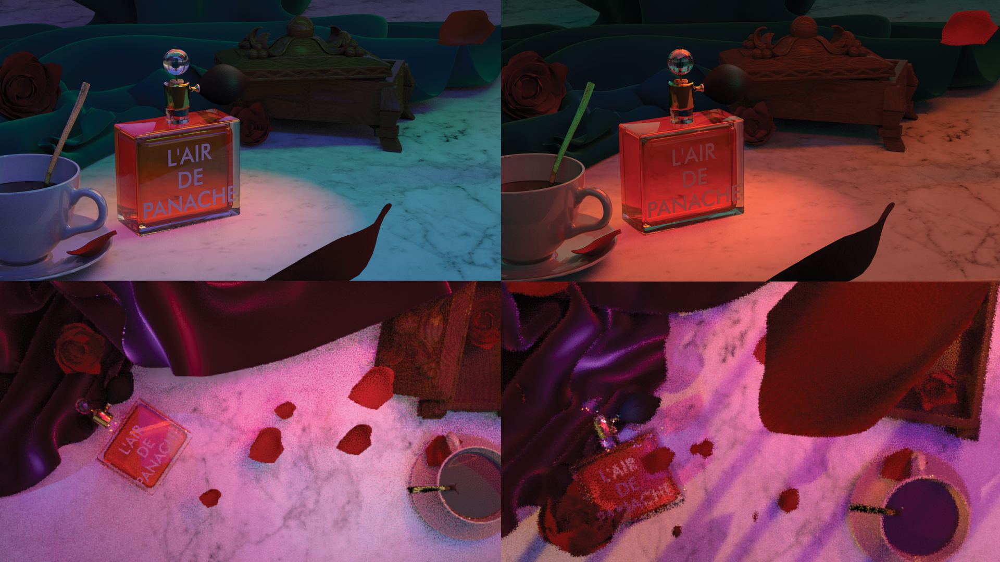
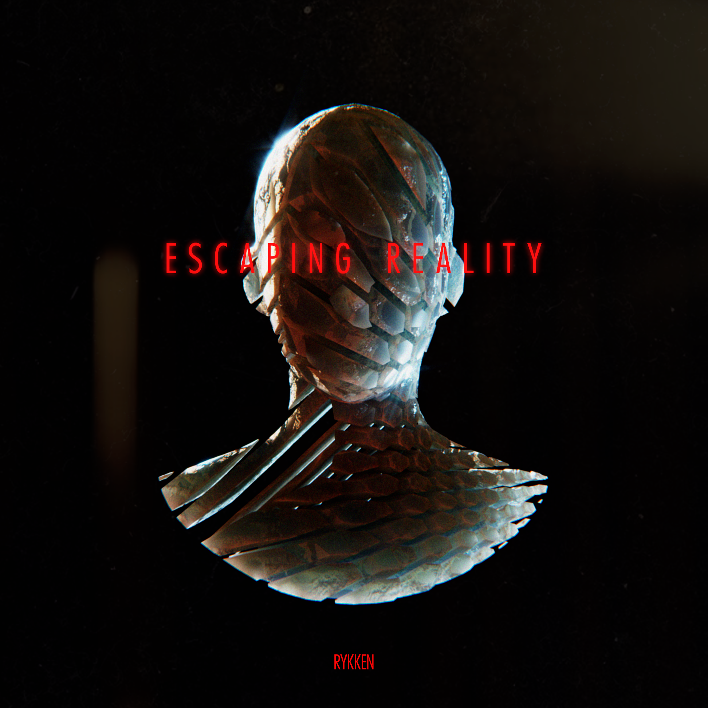
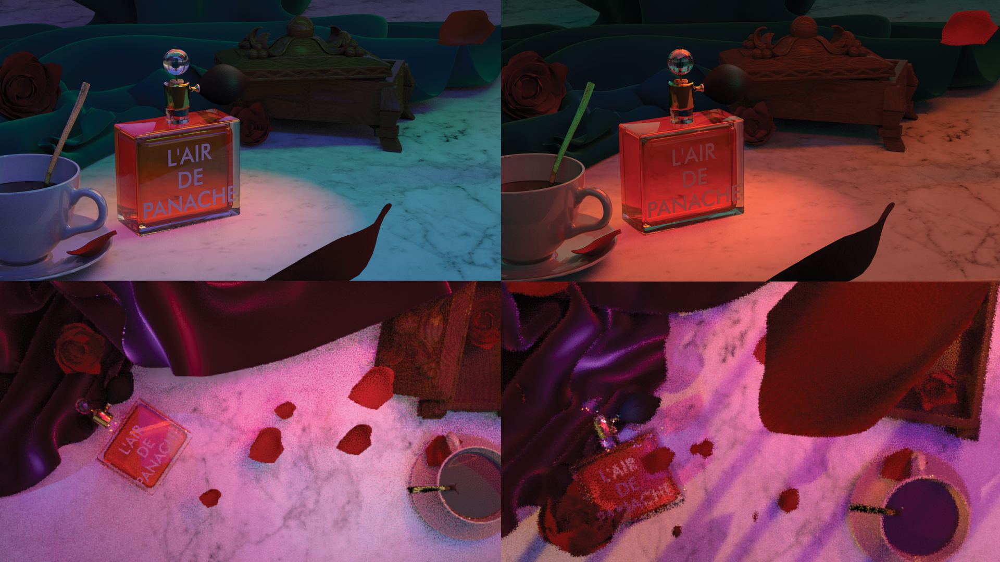
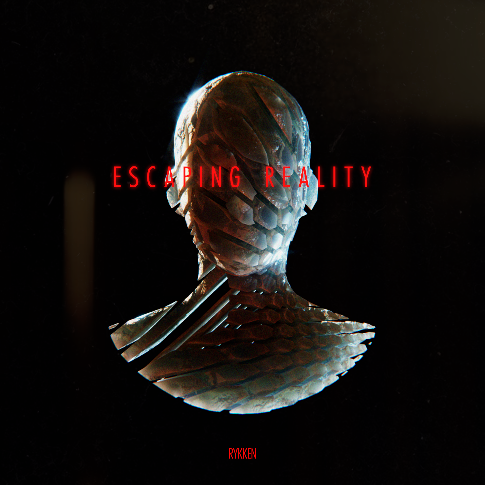

"Be a 'lowercase-d' designer."
This advice lives in my psyche—balancing my practice in specialty and standard.
I'm a specialist at heart. I have a lot of fun doing a few things well. Stirring sugar into my morning tea without letting the spoon hit the sides of the cup. Putting on my seatbelt with one hand and starting the car with the other. Flipping an entire omelet in the pan.
Similarly, I design towards beauty. Thus, I'll learn about all the nuances to talk about great work—from concept to completion. Cultivating the use of tools like Illustrator, Cinema 4D, and the mighty pencil; in tandem with learning new ones (Blender, Figma, and React) is a unique reality of design.
And, there's more to design than collecting new skills every quarter. For timeless design, it must be constantly used—beauty alone can become a pretty table weight. Communicating its potential via presentation, teaching function through demonstration, and meshing the team together are each skills I pride myself in. Tempered by thousands of hours volunteering for non-profit organizations: From building care packages for people who are homeless to leading convention committees for thousands of attendants. I continue polishing my craft, in practice and delivery.
Are you a specialist or a generalist? Tell me more, pen-pal.